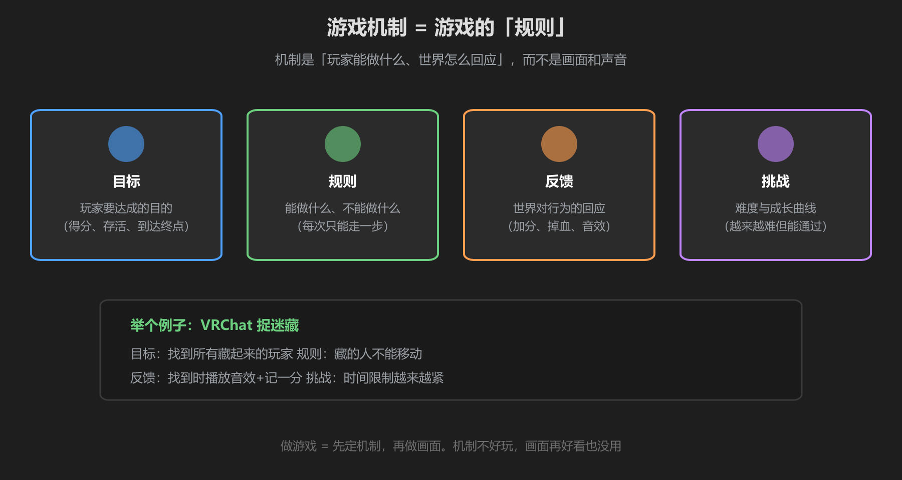
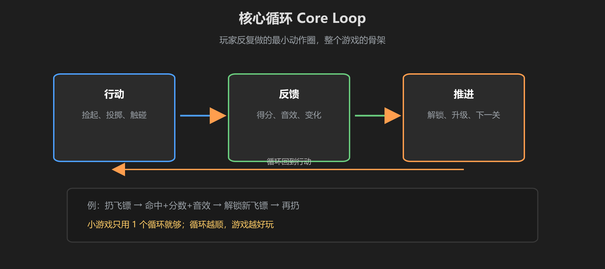

第 1 篇：游戏机制是什么 — 目标、规则、反馈、挑战
做游戏的第一步不是建模，也不是写代码，而是想清楚规则。游戏机制（Game Mechanic）就是游戏的规则：玩家能做什么、世界怎么回应。
1. 机制的四大要素

图：目标、规则、反馈、挑战 —— 一个好游戏缺一不可
| 要素 | 是什么 | 例子（捉迷藏） |
|---|---|---|
| 目标 | 玩家要达成的目的 | 找到所有藏起来的玩家 |
| 规则 | 能做什么、不能做什么 | 藏的人不能移动 |
| 反馈 | 世界对行为的回应 | 找到时音效 + 记一分 |
| 挑战 | 难度与成长曲线 | 时间限制越来越紧 |
机制 vs 画面：机制是"好玩"，画面是"好看"。机制不行，画面再精致也留不住人。VRChat 里大量「好逛但不好玩」的世界，就是只有画面没有机制。
2. 核心循环 Core Loop

图：行动 → 反馈 → 推进 → 再行动，这是游戏的骨架
核心循环是玩家反复做的最小动作圈。小游戏通常只有一个循环，它越顺畅，游戏越好玩：
- 扔飞镖 → 命中 → 加分 + 音效 → 解锁新飞镖 → 再扔
- 钓鱼 → 提竿 → 上钩 → 收获 → 换位置 → 再钓
- 抢答 → 按按钮 → 得分 → 领先 → 继续抢
3. 用一句话写规则
开始做之前，先把游戏压缩成一句话。写不出来 = 还没想清楚。
例子："玩家在 60 秒内按按钮抢答，答对加 10 分，先到 100 分获胜。"这句话里包含：时间（60 秒）、操作（按按钮）、规则（抢答）、计分（10 分）、目标（100 分获胜）—— 全是机制。
建议：这句话写下来贴在屏幕边。写代码时每遇到"要不要加这个功能"，都拿它来对照 —— 与规则无关的功能先不做。
学前检查清单
- 理解了机制四要素（目标/规则/反馈/挑战）
- 能说出自己的游戏的核心循环
- 用一句话写出了自己的游戏规则